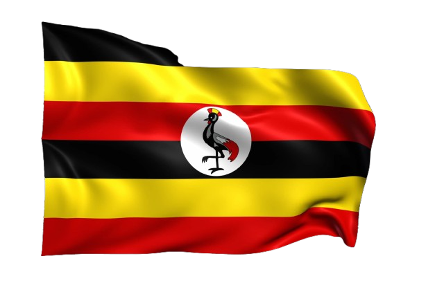

My name is Onen Sean Thomas Ongaya and I usually go by Sean. I was born and live in Uganda with my family. I am currently part of a trainee program at a beverage company, an experience that I greatly enjoy. I love traveling and getting new perspectives.
Onen Sean Thomas Ongaya
About Me

Uganda
Uganda, a landlocked country in East Africa, is home to Lake Victoria, the Source of the Nile, and the Rwenzori Mountains, called the “Mountains of the Moon.” Known as the “Pearl of Africa,” it boasts rich wildlife, including endangered mountain gorillas, and diverse landscapes from savannas to forests. With a population of around 46 million, over 75% under 30, Uganda is culturally vibrant, with more than 50 ethnic groups and languages like Luganda widely spoken. Agriculture drives its economy, while music, art, and traditions make it a lively and colorful nation.